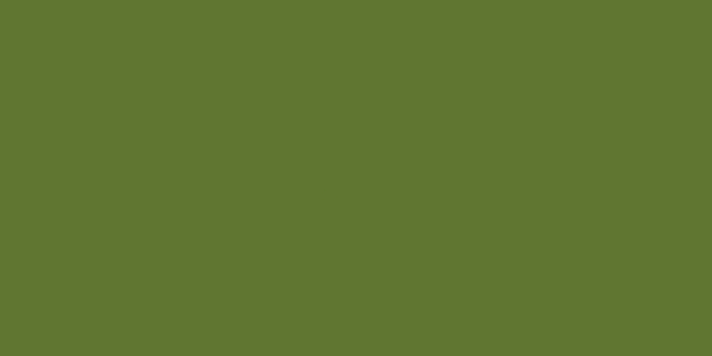
Move+
More technique. More control. More movement.
Visual identity for Move+, a conditioning and strength training center. A slanted logo, in dark olive green with a lime-green +, conveys speed and progress, and is applied from the icon on a watch to a T-shirt, with a direct voice that promises more technique, more control and more movement.
Move+ is a conditioning and strength training center. It offers professional guidance, focus on goals and a path built on consistency. The brand translates that into slanted letters that keep moving forward and a lime-green + sign: always one step more.
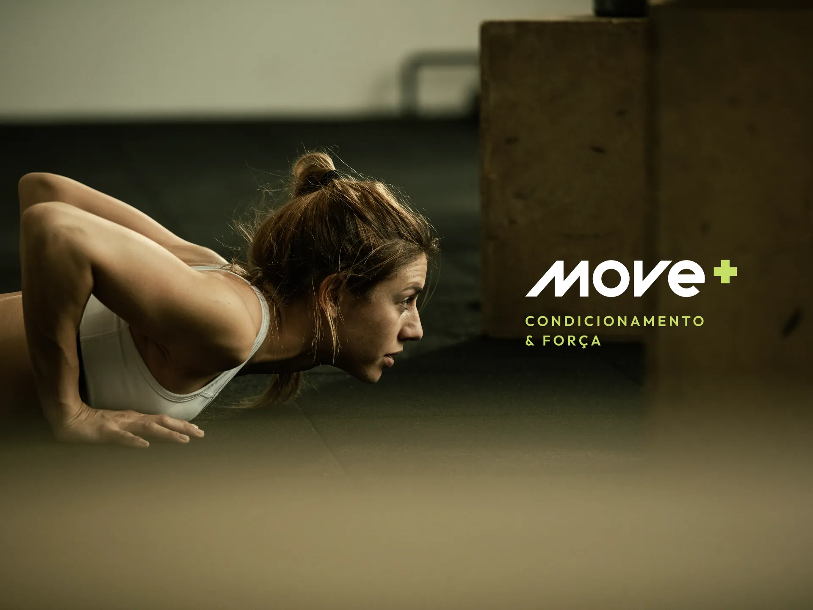
The logo is fully slanted, with diagonal cuts in the letters, to give speed. The dark olive green brings firmness and the lime-green + is the only spot of color, the sign of progress. The version with “Training center” goes with the brand across materials.
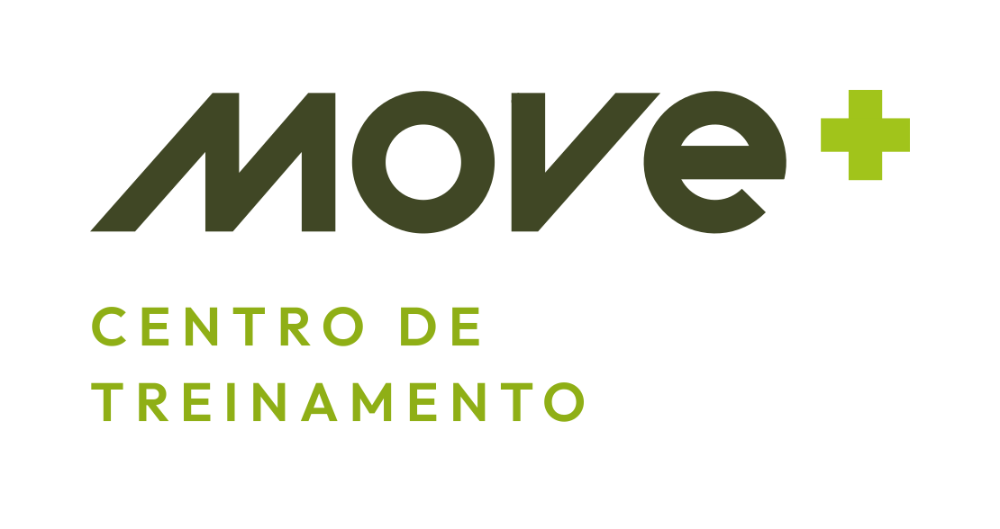
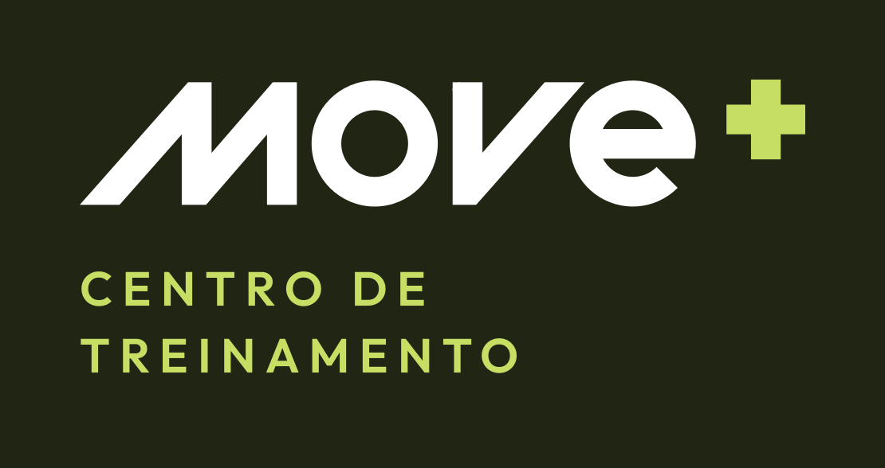
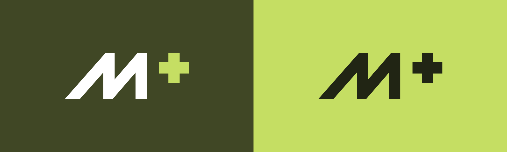
The icon reduces the brand to the M and the +: a slanted shape, in motion, that fits in an app, on a watch or in a profile picture.
More technique. More control. More movement.
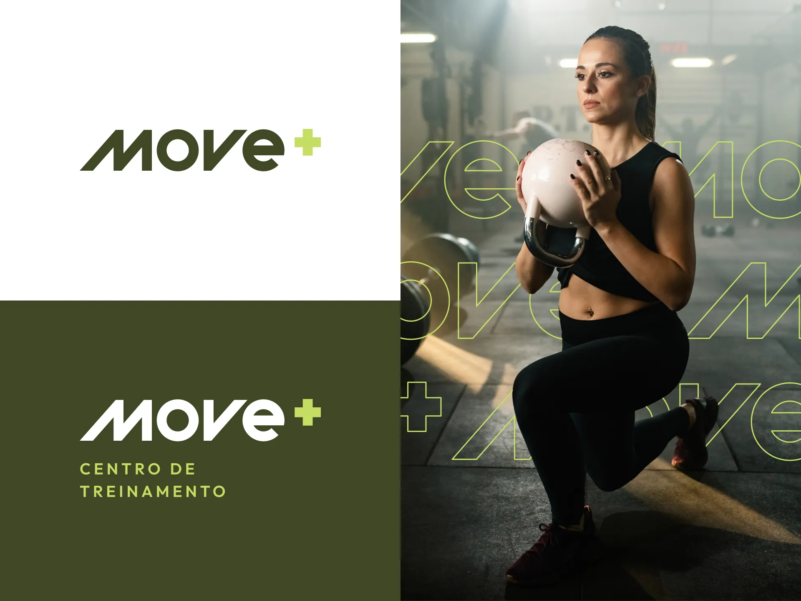
Dark olive green gives the base, sober and firm, and lime green comes in as energy, in small doses.
- Darkest green#212514
- Olive green#404725
- Medium green#556B2B
- Lime green#C5DE63
- White#FFFFFF
The brand takes shape on the everyday gear: what you wear, carry and use on your wrist. The logo and the icon change size and background without losing presence.
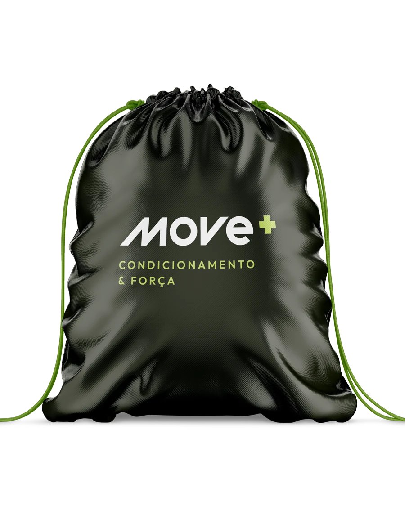
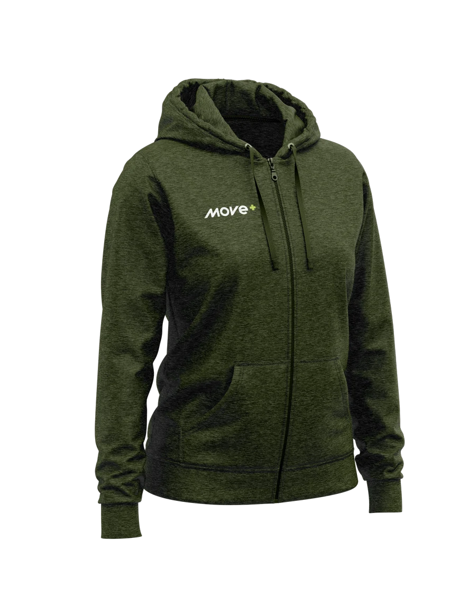
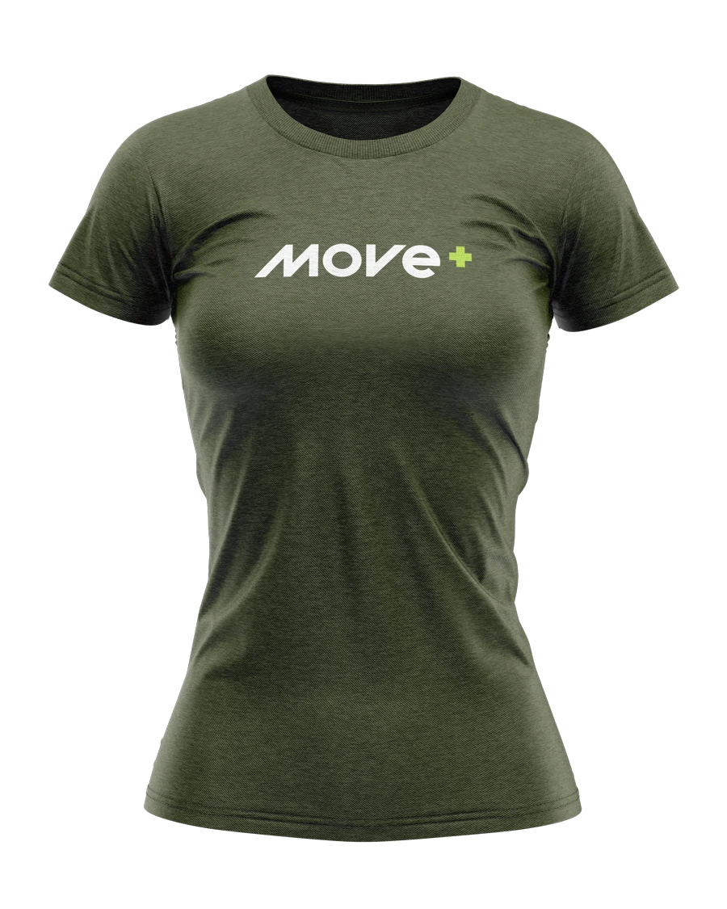
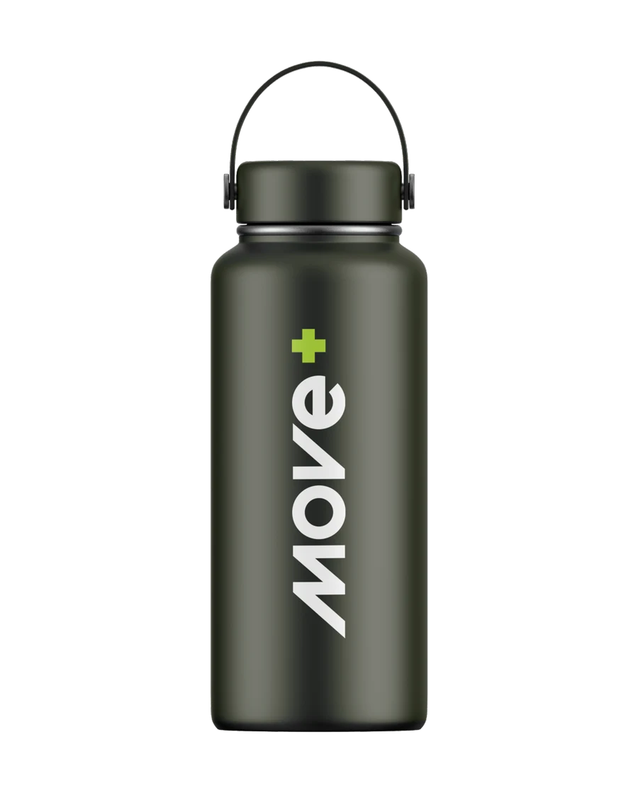
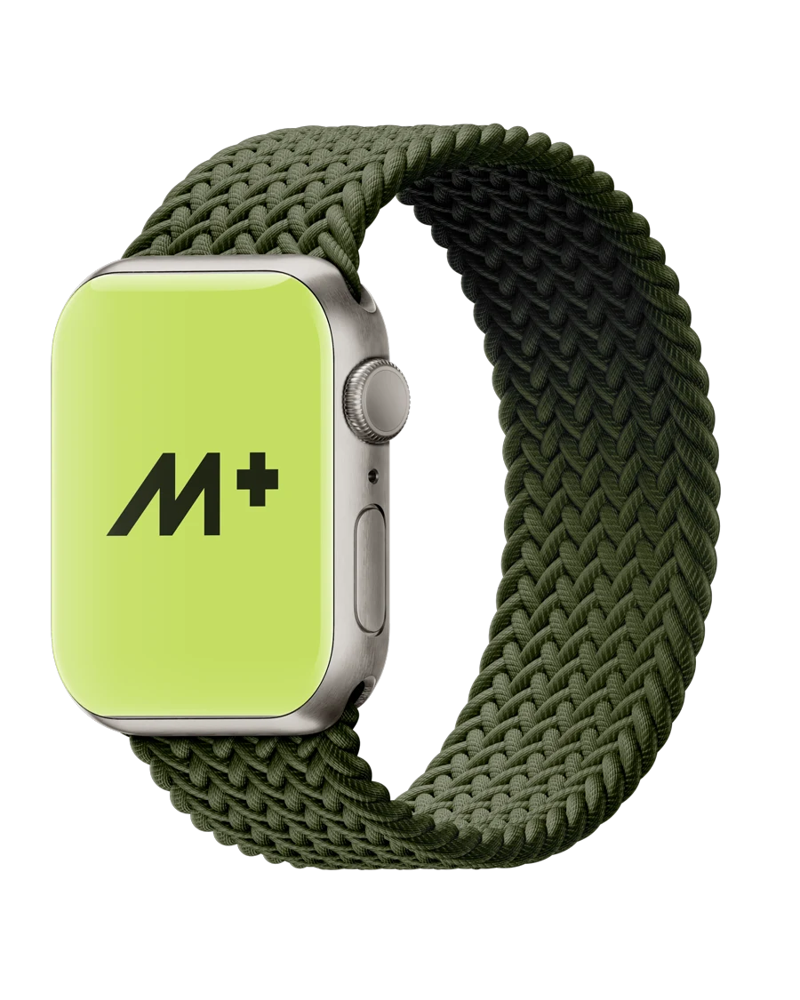
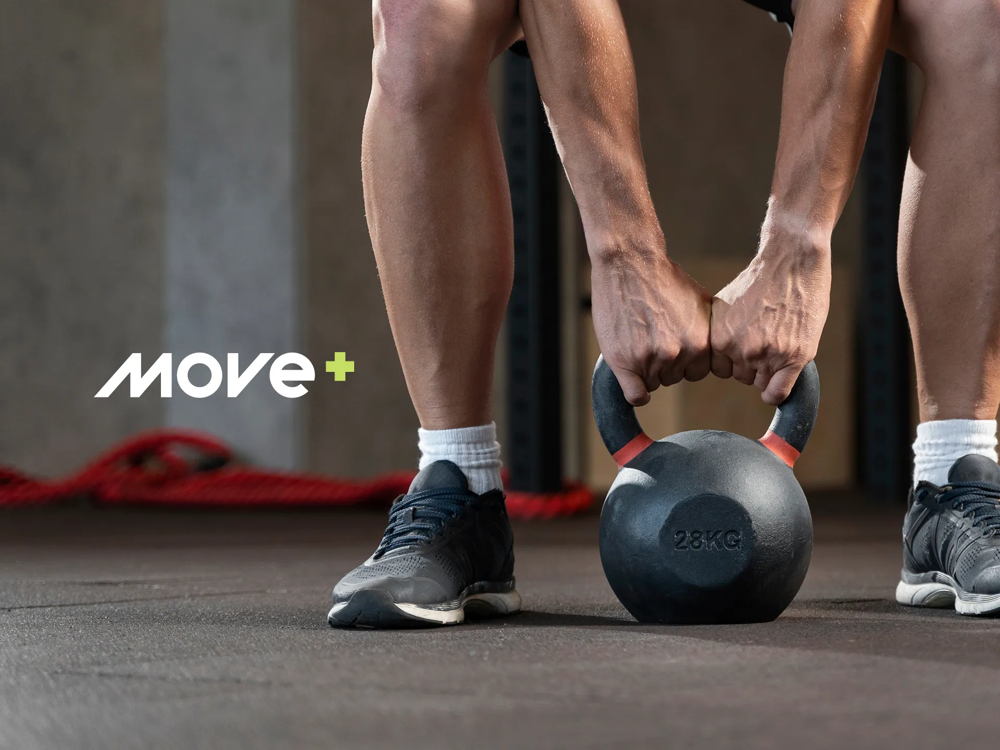
More movement.
- Design
- Nícolas de Queiróz